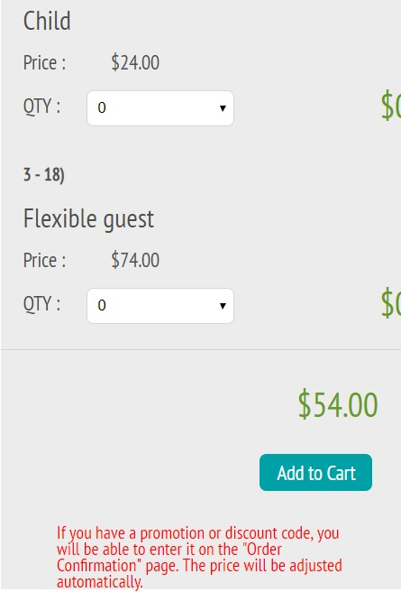

Intro
In continuation of last week’s usability testing, I looked at how three participants interacted with Woodland Park Zoo's website on mobile. The oversight in which memberships were presented to users was the focus of this testing. If users were having issues on the desktop page, I wanted to see how they fared on mobile.
Method and Tasks
I used the the same script from last week in order to simulate the same conditions. The tasks stayed the same as well:
- Navigate to the membership page
- Choose and sign up for the best membership that fits your current situation.
- Choose the best membership that would fit this scenario: 2 parents, 1 child, and 1 non-related adult such as a nanny or babysitter.
However, the setup slightly changed. Before, I was able to sit off to the side of the user and observe them using a laptop and simultaneously see the screen. In this week’s testing, I had them use my personal iPhone 8, a much smaller screen than a laptop. To avoid hovering over my participants, I decided to cast the phone through my AppleTV while sitting off to the side where I could see both the phone and the casted screen on a much larger tv screen.
Background Info
The makeup of my participants this week, while still similar in age range 25 – 30 and work experience (all three tech), are either in a domestic partnership or married. One participant noted that they have a child with their significant other.
First Task: I Don’t Know Why I’m Testing This
To start things off, my participants were easily able to complete the first task with no problem. On mobile, the top of the page lists: tickets, membership, and donate. I didn’t bother to time this task, the time it took to complete this task seemed to be correlated to how quickly they could press a finger on the membership icon. Two users opted to do this testing with one hand, using their thumb to navigate and touch the screen to navigate. One user opted to hold the phone in their non-dominant hand (left) and use their right index finger to perform all actions.
Nothing really of note here. Average time to complete: < 1 second.Second Task: Surprise, Surprise
Where the first ask took no time to complete, the second task made up for the lack of time. Last week, the average time to complete this task was 33 seconds. In this week’s testing, the average time to complete, was 1 minute 40 seconds. My main takeaway from this task was that all my participants took the time to look through each and all options which, in my opinion, directly affected their performance in the next task. I think it helped that the marital status of my participants was different than my previous batch of participants. Listening to their thought process, I noticed that they would bring up their significant other in consideration of how they fit into membership plans so it seemed they had a genuine interest in the membership plans, something that may have been lacking in my previous usability testing. Another factor in the longer times was the layout of the page on mobile. To add members to a plan, the page would get cut off on the margins on the right. After some scrolling, the participants were able to see the full page but it definitely hindered the process.
 Everyone picked a variation of the annual pass. Average time to complete: 1 minute and 40 seconds. Note the cutoff at the right margin.Third Task: Maybe I Overreacted Last Week…
I was surprised by the final task’s outcomes. The average time to complete was less than the second task’s average time at 55 seconds. All participants chose the correct plan in this task, the Family Passport. In all three instances, the participants referred to the second task where they had already figured out the differences in the membership plans. When one participant started building a plan based off the annual membership plan, they noticed that they would be paying a higher price, so they deleted the selected plan from their cart and went back to add the Family Passport. The problems that were faced in the previous week, didn’t seem to be an issue here at all.
Success! Average time to complete: 55 seconds.Interpreting Results
The mindset of user determines how they interact or parse information. It’s a very simple thing to note and not an earth-shattering observation or conclusion by any means. I was so caught up in trying to prove the point that the way in which this website is set up, people might be misled into signing up for the wrong membership, it didn’t dawn on me that this might not be a problem to people who don’t have a vested interest in certain memberships.
Single people or those who are married or are in a partnership with no children, for the most part, don’t need to worry about the difference between the Annual Pass and the Family Passport. In fact, if they only see the Annual Pass as on option, they will have saved themselves a lot of time from reading unnecessary information. It dawned on me when I saw my participant who was married and has a child go through this usability test that different people in different situations would respond differently. In that particular instance, they had a vested interest in finding the best plan so they would go the extra mile to read on to see all the option presented to them.
Conclusion
So, was this usability testing a waste? Probably, it could go either way at this point. I would be interested in the reasoning and thought process behind the layout of the membership page. Was it something well thought out to have the Annual Pass be the default because that might fit most people’s needs? Did I stumble upon something that wasn’t a problem that I made into a problem? Whatever it may be, my three participants this week taught me that people will find a way to serve their needs.